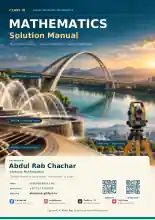

Class XI · Published
Mathematics Solution Manual — Class XI
Detailed step-by-step mathematical solutions, visual learning support, and worked explanations for students, teachers, and independent learners.
DOI: 10.5281/zenodo.23264017 ↗
The download opens the official Zenodo publication page, where you can choose the PDF file.